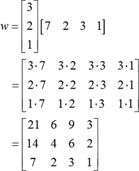

矩阵和向量
Table of Contents
1. 向量
在矩阵中，横向是行向量，纵向是列向量，通常说向量就指列向量。向量有标量乘法运算，即每个元素与标量相乘；元素个数相等的两个向量之间也可以加法运算，即每个元素分别相加。向量的标量乘法和加法则称为线性组合,这是一个非常重要的概念，也是线性代数的基础。
对于n元线性方程组，中学阶段是横向看的，即每个等式代表一个面（3元）或者一条线（2 元），解线性方程组就是在寻找面或者线的交点；现在可以用向量的线性组合来重新理解n 元线性方程组：纵向看，提取出每一列的未知量，系数写为列向量，整个方程组变为了n个列向量的线性组合。
\begin{equation*} x_1 \begin{bmatrix} a_{11}\\a_{21}\\ \vdots\\ a_{m1}\end{bmatrix}+ x_2 \begin{bmatrix} a_{12}\\a_{22}\\ \vdots\\ a_{m2}\end{bmatrix}+ \dots+ x_n \begin{bmatrix} a_{1n}\\a_{2n}\\ \vdots\\ a_{mn}\end{bmatrix}= \begin{bmatrix} b_1 \\b_2\\ \vdots\\ b_m\end{bmatrix} \end{equation*}这样就把解n元线性方程组的问题转化为向量 \(b\) 能否被向量组 \(a_{i}\) 线性表出的问题，这个问题是线性代数主要的研究对象之一。
- 长度（length,magnitude,norm）
- 设 \(\vec a=(x,y)\),其长度 \(\lVert \vec a
\rVert=\sqrt{x^2+y^2}\).The vector length is called Euclidean length, or
Euclidean norm,Mathematician often use term norm instead of length.There are many common norms:
- 1-norm is defined by the sum of absolute value of the vector elements \(\left \| \mathbf{a} \right \|_{1} = \left | a_{1} \right | + \left | a_{2} \right | + ... + \left | a_{n} \right |\)
- 2-norm is the most often used vector norm, sometimes called Euclidean norm. \(\left \| \mathbf{a} \right \| = \left \| \mathbf{a} \right \|_{2} = \sqrt{a_{1}^{2}+a_{2}^{2}+...+a_{n}^{2}}\)
- p-norm is sometimes called Minskowski norm is defined as \(\left \| \mathbf{a} \right \|_{p} = \sqrt[p]{a_{1}^{p}+a_{2}^{p}+...+a_{n}^{p}}\)
- 点乘积（dot product）
- 结果是一个数字 \(\vec a_1\cdot\vec a_2=x_1x_2+y_1y_2=\lVert \vec a_1 \rVert \lVert \vec a_2 \rVert\cos{\theta}\).所以当两个向量互相垂直时。它们的内积为0.
- 叉乘积（cross product）
- 也称向量积(vector product)，结果是一个向量，向量的大小（Magnitude）\(\lVert\vec a_1\times\vec a_2\lVert=\lVert \vec a_1\rVert \lVert \vec a_2 \rVert\sin{\theta}\) ,方向满足右手定则。外积还有行列式形式的计算方法 \(\vec a_1\times\vec a_2=\begin{vmatrix} \vec i & \vec j & \vec k\\ x_1 & y_1 & z_1\\ x_2 & y_2 &z_2\end{vmatrix}=\vec i(y_1z_2-z_1y_2)+\vec j(x_1z_2-z_1x_2)+\vec k(x_1y_2-y_1x_2)\).
- 外积 (outer product)
- 两个向量的张量积（tensor product），其结果是一个矩阵，设 \(u=\begin{bmatrix} u_1 \\u_2\\ \vdots\\ u_m\end{bmatrix} v=\begin{bmatrix} v_1 \\v_2\\ \vdots\\ v_n\end{bmatrix}\),那么两者的外积： \(u\otimes v=uv^T=\begin{bmatrix} u_1 \\u_2\\ \vdots\\ u_m\end{bmatrix}\begin{bmatrix} v_1 v_2 \dots v_n\end{bmatrix}=\begin{bmatrix} u_1v_1 & u_1v_2 &\dots & u_1v_n\\ u_2v_1 & u_2v_2 & \dots & u_2v_n\\ \vdots & \vdots & \vdots & \vdots\\ u_mv_1 & u_mv_2 & \dots & u_mv_n\end{bmatrix}\)

Cross product is much more related to exterior product which is in fact a far going generalization.
Outer product is a matricial description of tensor product of two vectors.
2. 矩阵
A matrix is a rectangular array of numbers or entries,when \(A\) has m rows and n columns,it is an "m by n" matrix.当两个矩阵纬度相同时，它们可以做加法，即对应的每个元素分别相加，矩阵与标量的乘积运算是标量与每个元素相乘。
2.1. 矩阵与向量乘法
一个m行n列的矩阵 \(A\) 可以和一个n行1列的向量 \(x\) 做乘法，假设 \(Ax=b\),可以从两个角度理解矩阵与向量的乘法。第一， b 中的每个元素都是矩阵 A 的行向量与 x 的点乘积；第二，把 A 看作是n个列向量， b 是这n个列向量的一个线性组合。
2.2. 矩阵与矩阵乘法
一个m行n列的矩阵 \(A\) 可以和一个n行p列的矩阵 \(B\) 做乘法，结果是一个m行p列的矩阵。假设 \(AB=C\),可以从四个角度理解矩阵乘法。
- 直接计算法。矩阵 C 中第 i 行第 j 列元素 \(C_{ij}\) 是 A 的第 i 个行向量与 B 的第 j 个列向量的点乘积。
- C 中的每一列（每个列向量）是矩阵 A 与 B 中的每个列向量 bj 的乘积。
- C 中的每一行（每个行向量）是 A 的行向量 ai 与 B 的乘积。
- 分别计算 A 的每一列和 B 的每一行的外积，将得到的矩阵分别相加。
矩阵乘法的性质： \(AB \neq BA \quad A(B+C)=AB+AC\quad(A+B)C=AC+BC\quad\) \(A^{p}A^{q}=A^{p+q}\quad(A^{p})^{q}=A^{pq}\quad(AB)^{p} \neq A^{p}B^{p}\)
2.3. 特殊矩阵
- 单位矩阵（identity matrix），是一个方阵，对角元素全为1,非对角元素全为0,任何矩阵与其相乘后仍是原矩阵。
- 零矩阵（null matrix），元素全为0的矩阵，
- 1矩阵（matrix one），元素全为1的矩阵，用于累加原矩阵的行（左乘）或列（右乘）
- 对角矩阵（diagonal matrix），是一个方阵，对角元素非零，其余元素全为0.两个对角矩阵相乘等于相应位置上的两个元素分别相乘，对角矩阵左乘（右乘）一个矩阵相当于在那个矩阵的行（列）乘对应对角矩阵上的主元。
2.4. 矩阵的逆
只有方阵才有逆矩阵，满足 \(AA^{-1}=A^{-1}A=I\),在 \(Ax=b\) 中，如果 A x 为已知量， b 为未知量，我们可以很容易计算出 b,那么如果 A 和 b 已知，反过来求 x 怎么办呢，这时候就用到了逆矩阵： \(x=A^{-1}b\),根据n 元线性方程组解的情况看，并不是所有矩阵都可逆，如果矩阵可逆那么方程组有解，否则无解。